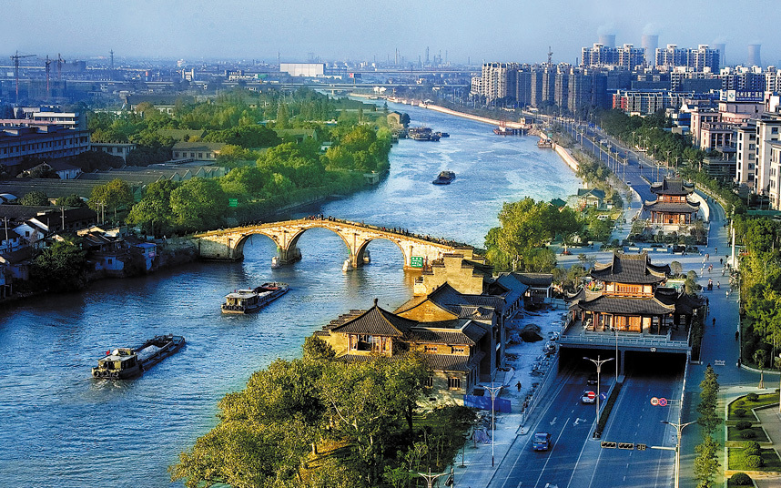

Hangzhou is one of China's seven ancient capitals and has been designated by the government as a "Historic and Cultural City". Hangzhou's history can be traced back over 2,200 years to the Qin Dynasty (221 BC). It flourished after being linked with the Grand Canal, which starts in Beijing and ends in Hangzhou. It was originally the capital of the Wuyue Kingdom from 907 to 978 during the Five Dynasties and Ten Kingdoms Period. Then it became the capital of the Southern Song Dynasty in 1132.
Marco Polo, a famous traveler and explorer from Venice, visited Hangzhou in the late 13th century. He was overwhelmed by the city and spent one fifteenth of his travels describing the spectacular city of Hangzhou. He described it as "the city of heaven" and "the finest and most splendid city in the world".
West Lake, the symbol of Hangzhou, is considered to be one of the most beautiful sights in China. It was recognized by UNESCO as a World Heritage Site in 2011. It is a perfect combination of numerous temples, pagodas, pavilions, gardens, and ornamental trees. West Lake has influenced poets and painters throughout Chinese history for its natural beauty and historic relics, and it has also been among the most important sources of inspiration for Chinese garden designers.
With a length of more than 2,000 kilometers, the Grand Canal is the longest canal or artificial river in the world, running from Beijing in the north to Hangzhou in the south. It was added to the World Heritage List in 2014. You should not miss a boat trip along the canal to experience its glorious history.
Situated in the western part of Hangzhou, less than 5km from West Lake, Xixi National Wetland Park is a rare urban wetland. With rich ecological resources, simple natural landscape and profound culture. It is the first and only wetland park in China combining urban life, farming and culture.

Xixi National Wetland Park